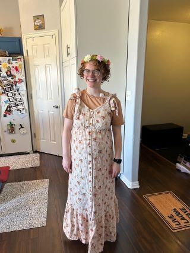
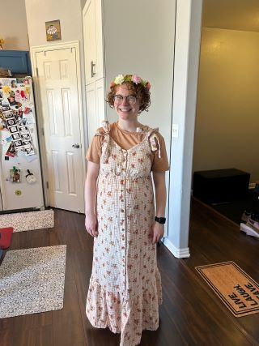

Family Event Index Table / Tabla de Índice de Eventos Familiares
 


Family events index: Family events, special occasions, and celebrations pictures with memories notes.
The events in the table below are not listed chronologically, but recent ones are at the top. To view the subpage, click the link in the second column.
To protect family privacy we omit some information, including full names and exact dates.
Índice de eventos familiares: Fotos de eventos familiares, ocasiones especiales y celebraciones con notas de recuerdos.
Los eventos en la tabla no están cronológicamente ordenados, pero los más recientes están primero. Para ver la subpágina haga clic en el enlace de la segunda columna.
Para proteger la privacidad familiar omitimos alguna información, icluyendo nombres completos y fechas exactas.
| Family Event Titles / Títulos de Eventos Familiares | Page cloud repository Link / Enlace al repositorio en la nube de páginas |
|---|---|
| Rio's Birth / Nacimiento de Emério | Future Event Link / Enlace de Evento Futuro |
| Chauntel's Baby Shower / Baby Shower de Chauntel | Future Event Link / Enlace de Evento Futuro |
| Chauntel’s Baby Shower / Baby Shower de Chauntel | Future Event Link / Enlace de Evento Futuro |
| Ale’s Graduations / Graduaciones de Ale | Future Event Link / Enlace de Evento Futuro |
| Ann’s Graduations / Graduaciones de Ann | Future Event Link / Enlace de Evento Futuro |
| Chautel’s Graduations / Graduaciones de Chautel | Future Event Link / Enlace de Evento Futuro |
| Jacob E.’s Graduations / Graduaciones de Jacob E. | Future Event Link / Enlace de Evento Futuro |
| Moses’s Graduations / Graduaciones de Moses | Future Event Link / Enlace de Evento Futuro |
| Future Event Title / Título de Evento Futuro | Future Event Link / Enlace de Evento Futuro |
| Future Event Title / Título de Evento Futuro | Future Event Link / Enlace de Evento Futuro |
| Future Event Title / Título de Evento Futuro | Future Event Link / Enlace de Evento Futuro |
| Future Event Title / Título de Evento Futuro | Future Event Link / Enlace de Evento Futuro |
| Future Event Title / Título de Evento Futuro | Future Event Link / Enlace de Evento Futuro |
| Future Event Title / Título de Evento Futuro | Future Event Link / Enlace de Evento Futuro |